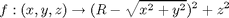

Torus example
In this example, we will aim at defining a 3-dimensional inversion problem, in order to solve it using vsivia.
The following function f will be considered:

where R = 5.
vsivia is used to determine an inner and an outer enclosures of the inverse image of f on [1,4], using paving. From a graphical point of view, we are looking for the set subtraction between two tori, around the Z-axis, that have a larger radius of R = 5, and whose smaller radii are 1 and 2. We set the initial box to [-8,8]x[-8,8]x[-8,8].
This problem being quite similar from doughnut_parameters, its parameters are defined in the same way, except that are 3 and not 2 dimensions (i.e. variables) to consider.
At first, we shall create a class inheriting from vsivia_parameters
classdef torus_parameters < vsivia_parameters
properties
We indicate the kind of problem: inversion.
algorithm = 'inversion' ;
Then the initial box.
U0 = [-8 8 ; -8 8 ; -8 8] ;
Then the interval image to be inverted.
Y0 = [1 4] ;
Then the accuracy parameter. We consider here an absolute epsilon of 0.5, which means that boxes whose larger component is smaller than 0.5 will not be bisected.
epsilon = .5 ;
end % properties
At last, the function f is defined.
methods (Static)
function z = compute(x,y,z)
R = 5 ;
z = sqr(R - sqrt(sqr(x) + sqr(y), 'p')) + sqr(z) ;
end
end % methods
end